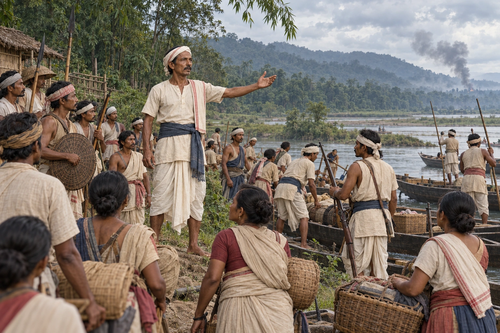

Harihar Tanti's Rising and the Burning of the Majuli Satras
1786 · The Moamoria risings

The rebellion resumes from the Dafla hills under Harihar Tanti, joined by Pitambar. Rebels burn the satras of Majuli and march on Rangpur.
Selects Harihar’s mobilisation rather than attributing a specific satra burning to his personal presence. Sources differ on Harihar/Hawha and their geographic roles; no alias is imposed.
Sources
People: Harihar Tanti
Open this scene in the interactive archive · Follow this event on MAP